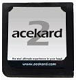

GBA and NDS Cartridges
Hardware cartridges are not necessary to run your programs, but it is a lot more fun to run your game on real hardware.
Gameboy Advance compatible cartridges
There are fewer GBA cartridges on the market now than there were a few years ago, but the two that are commonly available work perfectly fine for homebrew. They each require a miniSD card to store the GBA ROMs that you create.
These cartridges work in GBAs, GBA SPs and in the DS (original) and DS lite devices. The DSi does not have a GBA slot, so they do not work with the DSi.
|
M3 + miniSD Also known as the GBAMP (GBA Movie Player). | ||
|
Supercard + miniSD |
Nintendo DS compatible cartridges
A large number of DS cartridges are available and they all work fine for NDS homebrew. Many require a microSD memory card to store files while others have memory built-in.
Note that many of the older carts are not compatible with the Nintendo DSi. Verify compatibility before purchase if you intend to use a cart with a DSi.
|
 |
Acekard 2i + microSD Reviews: emuboards.com, gbatemp.net | |
|
Cyclo DS Evolution + microSD Reviews: emuboards.com, gbatemp.net | ||
|
DS Linker Reviews: gbatemp.net | ||
|
DSTT + microSD (DSTopToy) Reviews: emuboards.com, gbatemp.net | ||
|
G6 Real Reviews: emuboards.com, gbatemp.net | ||
|
M3 Real + microSD Reviews: emuboards.com, gbatemp.net | ||
|
R4DS (Revolution 4 DS) Reviews: emuboards.com, gbatemp.net | ||
|
Supercard DSOne Reviews: emuboards.com, gbatemp.net |
Where to buy
There are a number of online stores that sell these devices:
- http://www.dealextreme.com
- http://www.gamekool.com
- http://www.gameyeeeah.com/
- http://www.kickgaming.com/
- http://www.nxpgame.com/
I have not done business with all of these stores, but I have ordered from some and the others are ones that seem to have a good reputation online.